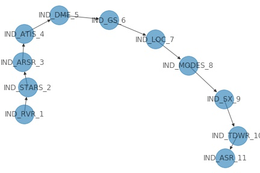
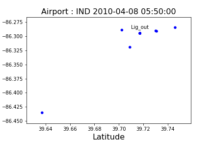
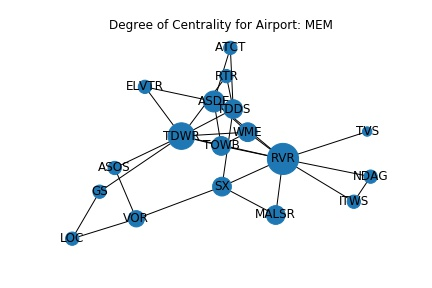
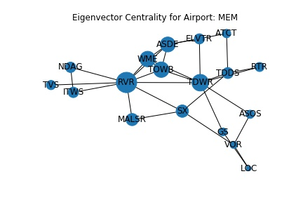
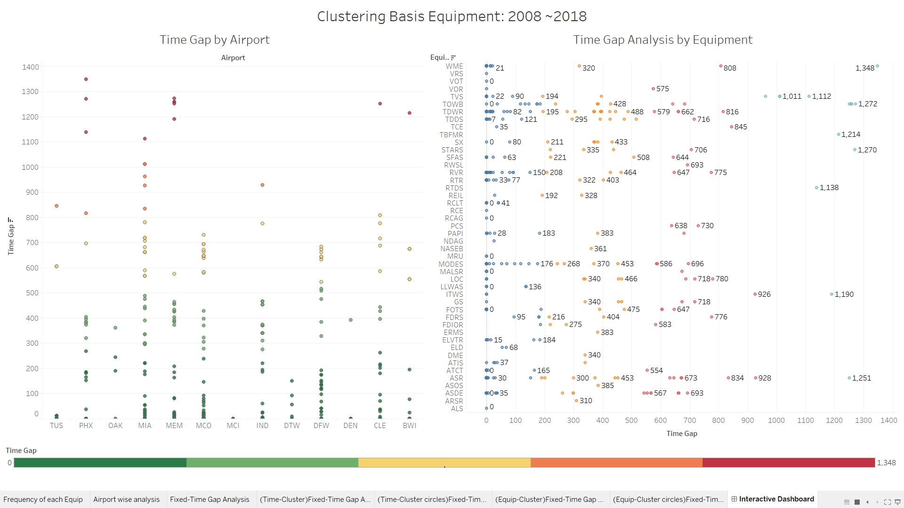

Network analysis, Centrality Analysis, and Data Visualization for 10 years of Air-Transportation data.
Due to a signed confidentiality/Non-Disclosure Agreement, limited visuals can be shared.
Data Analyst
Sept 2019 to Present
The U.S. Aviation System is the most complex and the largest of all civil infrastructure systems, operating 24/7, comprising of over 20,000 airports of varying sizes, and over 70,000 facilities, equipment units and services. This study will quantify the vulnerability of critical aviation infrastructure systems, such as Air Traffic Control Towers, to failures and convective weather (such as lighting strikes). Estimating the impact of failures on airport/airspace capacity, delay and operational costs can help in making smart investment decisions into infrastructure. As a result, aircraft operations can maintain high level of safety.
In order to get a good understanding, we attempt to answer the following questions:
We totally identified 133 lightening induced outage sequences for a decade of data. We further worked on identifying all outages that happened in the interval of a lightening outage start and end time. We set the outage start time limit as 24 hours after a lightening strike to filter authentic data from the data set that directly could correlate with lightening outages.
The outages in this bracket were sequentially arranged based on increasing time and we did sequential plotting to better understanding the network connection of outages. There would be 133 such diagrams.
For these 133 lightening connected outages, we further plot the outage distribution. The coordinates were plotted. Although we do set the limit to overall outages as 24 hours, we observe that there are some outages that do happen at a different coordinate from the lightning strike.
Degree centrality: Measures the number of edges attached to a node. It is used to determine what node ( here equipment) is most connected. We calculate the normalized degree centrality of a node by adding up the number of edges that are attached to the node and divide it by the total number of nodes minus one.
We took a consolidated list of all unscheduled equipment outages following a lightening ( 133 Nos of sequences) and grouped them for each airport from 2008-2018. We plotted the graphs for these under the two centrality criteria to identify equipment that are most connected.
Eigen Centrality:This parameter measures the node’s relative influence in the network, or how well a node is connected to other highly connected nodes. It is the mathematical measurement of the phrase “It’s not what you know but who you know.”
We normalize the time windows by fixing a specific lightening outage at a T=0 and then fix the time of remaining outages by taking the time difference with respect to their respective lightening outages.The equipments are arranged in the order of increasing time gap or in the sequence in which they occur. We can infer the time taken for an equipment to roughly get affected directly correlating with how reliable it is with respect to the lightening outages.
